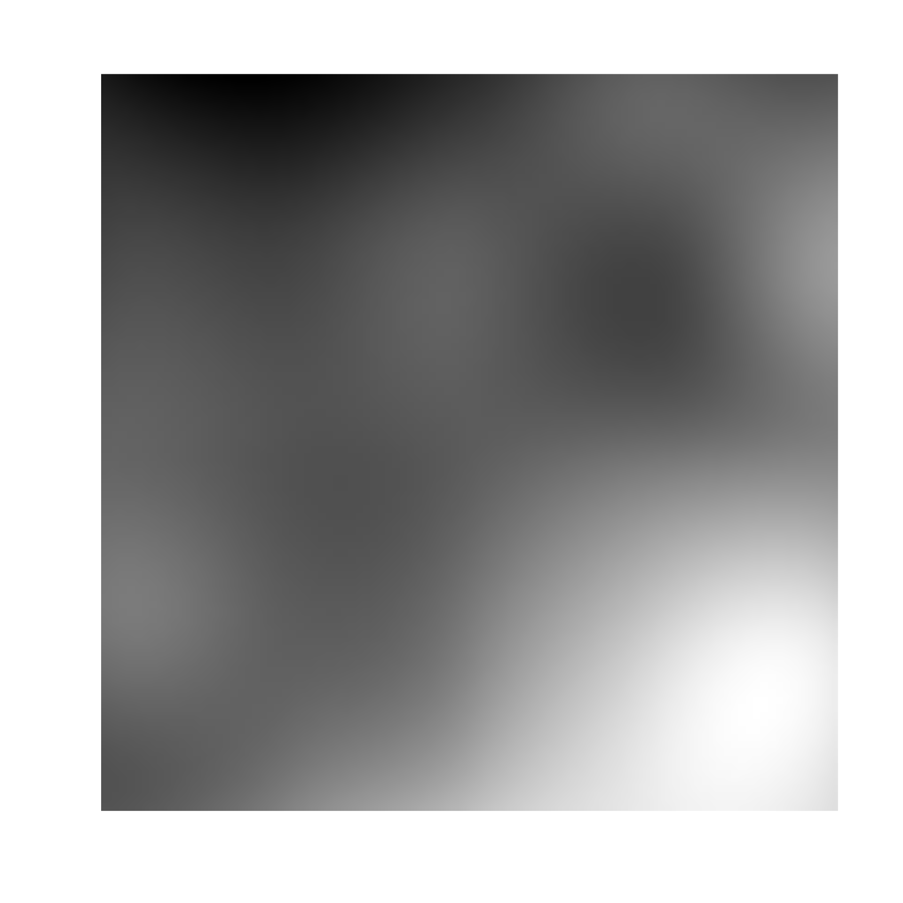
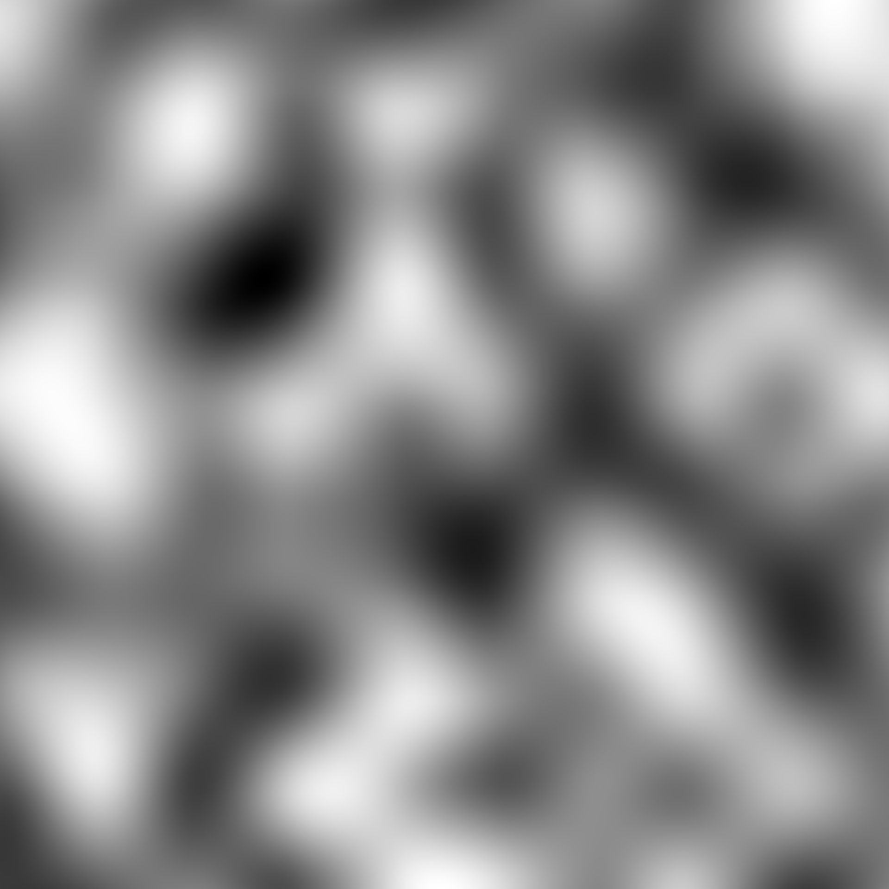

Cubic noise is a pretty simple alternative to perlin and simplex noise. In essence it takes a low resolution white noise and scales it up using cubic interpolation. This approach means that while cubic noise is smooth, it is much more random than perlin and simplex noise.
noise_cubic(dim, frequency = 0.01, fractal = "fbm", octaves = 3, lacunarity = 2, gain = 0.5, pertubation = "none", pertubation_amplitude = 1) gen_cubic(x, y = NULL, z = NULL, frequency = 1, seed = NULL)
| dim | The dimensions (height, width, (and depth)) of the noise to be generated. The length determines the dimensionality of the noise. |
|---|---|
| frequency | Determines the granularity of the features in the noise. |
| fractal | The fractal type to use. Either |
| octaves | The number of noise layers used to create the fractal noise.
Ignored if |
| lacunarity | The frequency multiplier between successive noise layers
when building fractal noise. Ignored if |
| gain | The relative strength between successive noise layers when
building fractal noise. Ignored if |
| pertubation | The pertubation to use. Either |
| pertubation_amplitude | The maximal pertubation distance from the
origin. Ignored if |
| x, y, z | Coordinates to get noise value from |
| seed | The seed to use for the noise. If |
For noise_cubic() a matrix if length(dim) == 2 or an array if
length(dim) == 3. For gen_cubic() a numeric vector matching the length of
the input.
# Using the generator grid <- long_grid(seq(1, 10, length.out = 1000), seq(1, 10, length.out = 1000)) grid$noise <- gen_cubic(grid$x, grid$y) plot(as.raster(grid, normalise(noise)))